El Entorno
Viví la cabaña y descubrí todo lo que ofrece el barrio: deporte, relax y gastronomía patagónica a minutos de tu puerta.
Todo cerca, lejos del ruido
Club de Campo Dos Valles
Barrio privado con seguridad perimetral 24 hs, a 15 minutos del centro de Bariloche. Canchas de tenis, fútbol y rugby, pileta, gimnasio, más de 30 km de senderos para trekking y mountain bike, y espacios verdes entre bosque de pinos con vista a los cerros.
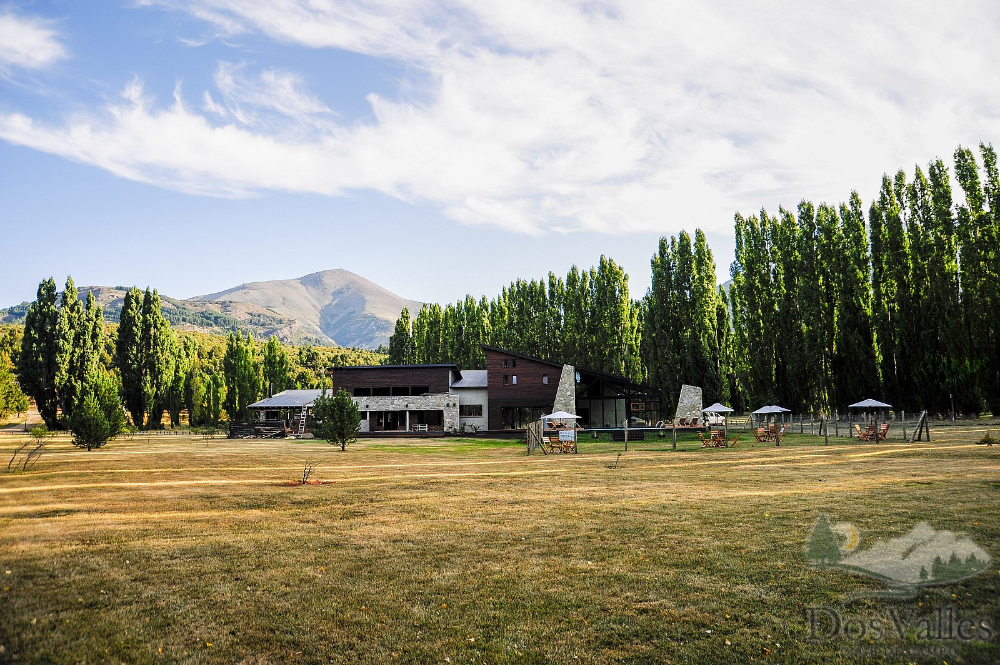
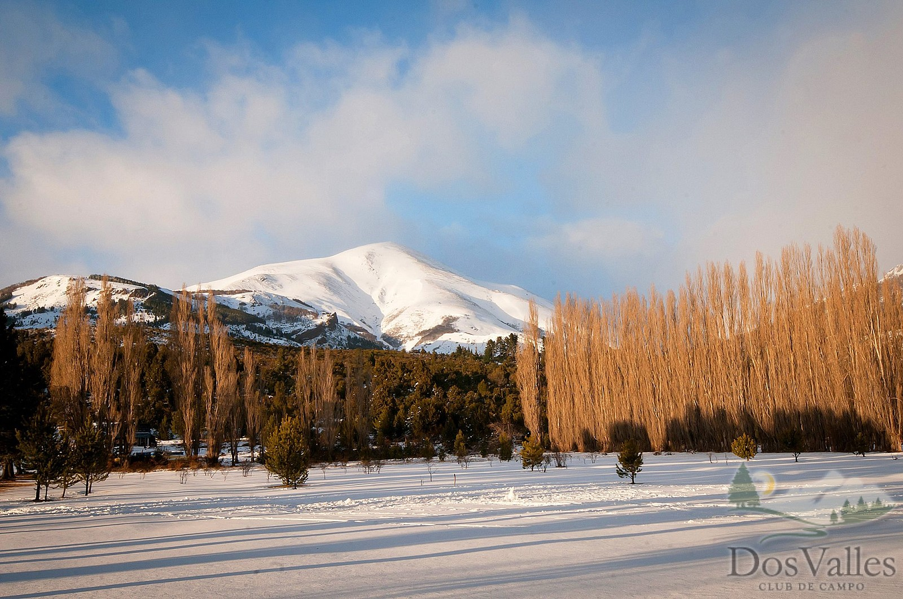
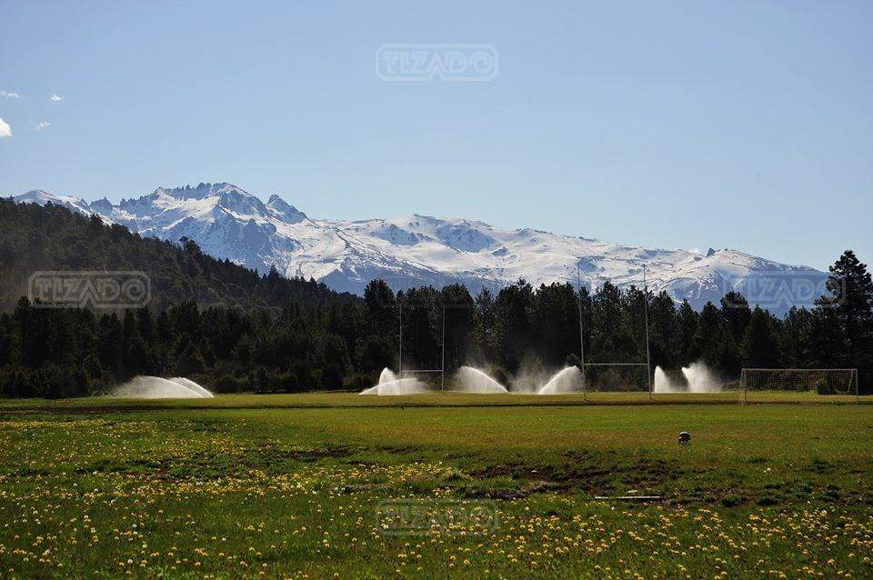
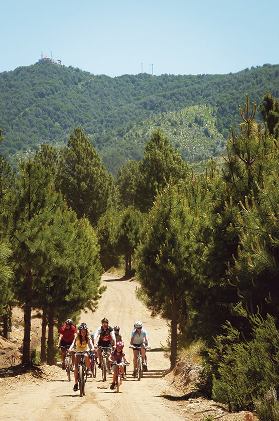
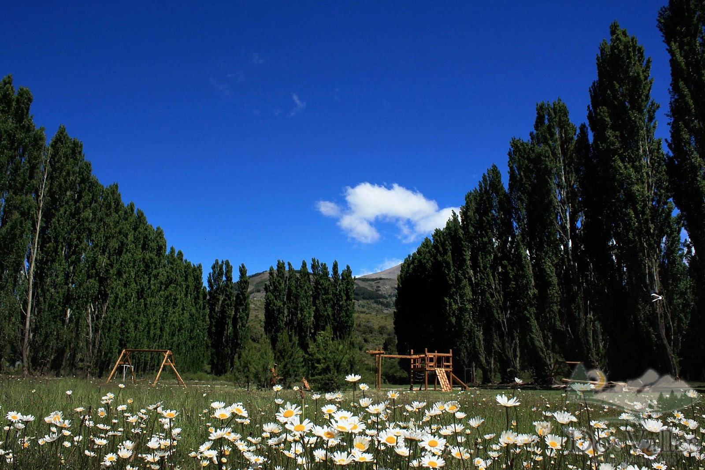
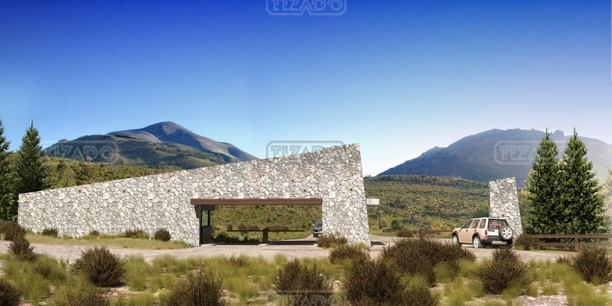
SPA Dos Valles
El wellness del club está en el Club House: pileta climatizada in-out, gimnasio con vista a la montaña, jacuzzi, sauna y salón de relax. También hay clases de yoga, natación y entrenamiento funcional (consultar horarios y reservas con la administración del barrio).
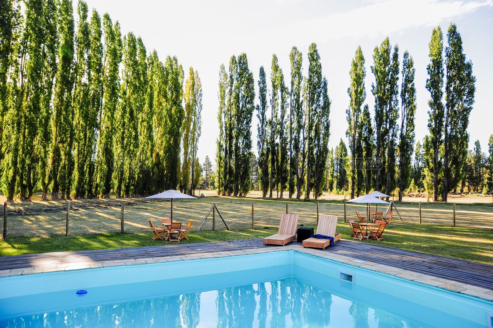
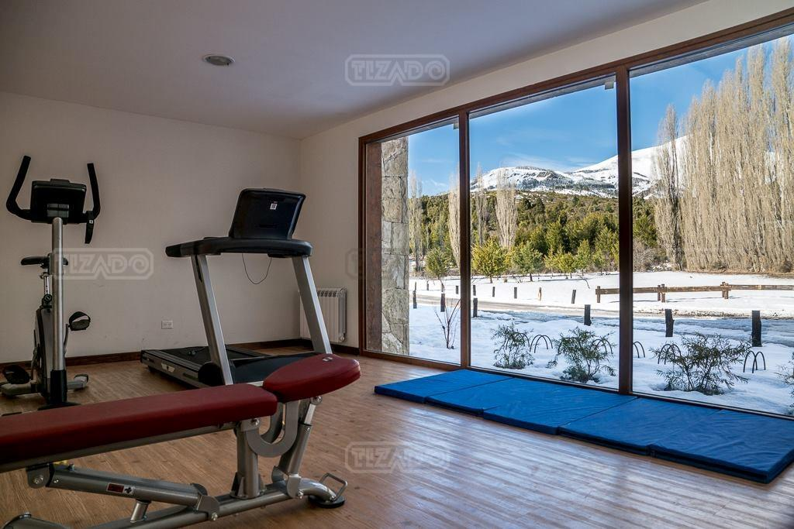
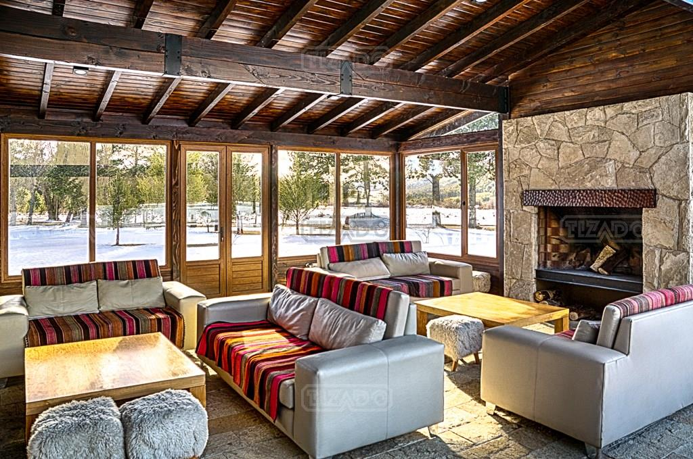
La Salamandra Pulpería
Restaurante de campo dentro del barrio, en Acceso al Challhuaco: cocina patagónica en un salón con hogar de piedra y madera. Ideal para una cena especial sin salir del country. Requiere reserva previa para coordinar el acceso.
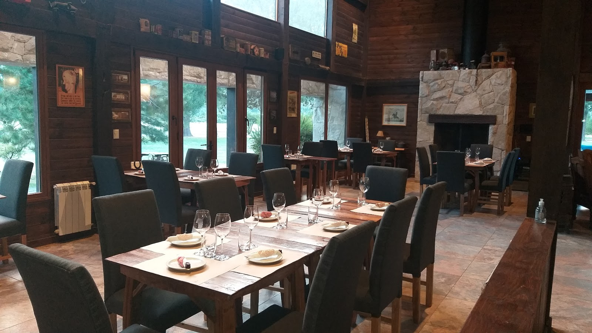
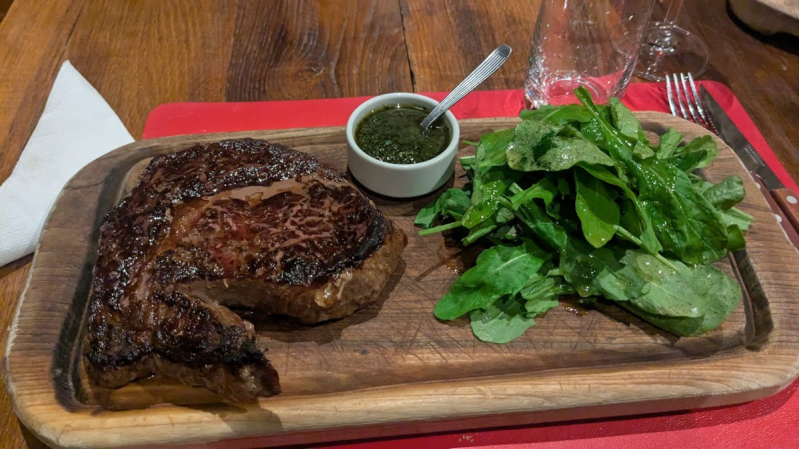
Belek Food Truck
Cerveza artesanal y burgers dentro del country: el food truck de Belek está en Dos Valles, ideal para cenar o tomar algo sin manejar hasta el centro. Consultá horarios según temporada en su Instagram.
¿Querés vivir la experiencia completa en la cabaña?